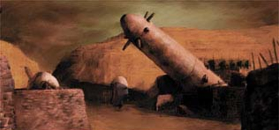
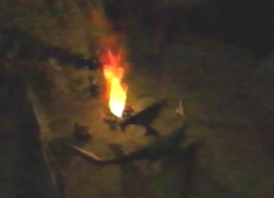
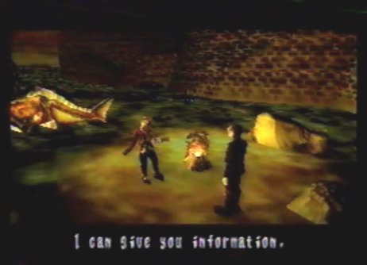
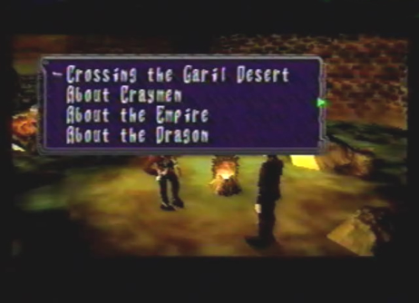
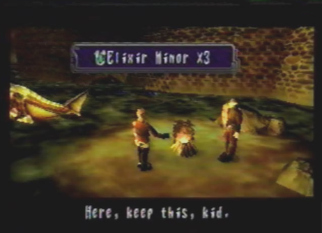

|
Items Found(none)/Area Map(s)(none) |
|
Diary Entry 7: Village of Cainus A Village of Lost Souls When we arrived at the Village of Cainus, the place was completely deserted. Not one soul in sight. Gash said everyone was attacked by monsters. He wanted to find out why these people were dealt such a terrible fate, so we stayed the night. As we sat by the fire, we talked about many things. Gash told me that his people view dragons as the messengers of the Gods. He also said, if there were such a thing as Gods, the villagers wouldn't have been ripped to pieces, in a feeding frenzy! His talk of the villagers sad fate, only led me to think of my own friends violent deaths. I told Gash that I was after a man named Craymen, whom had killed my friends. To my surprise, Gash knew where Craymen's next destination was: the desert! He told me he was also after someone. Someone known only as the Divine Visitor, or so he called it. He hesitated to tell me anything more, so I left it at that. Near the surrounding area we found a message written by a fellow seeker in cold blood. The message revealed that Craymen himself, led the monsters into the village. That bastard! Will his reign of terror ever end?! Throughout the night my thoughts of revenge only grew stronger. When the sun rose, we were off to the Garil Desert.  |
|
| Divine
Overview |
 1. Listen to Gash as he tells stories by the fire. Gash tells Edge he is looking for the Divine Visitor ( Ha, he will never find me!). |
 2. After, agree to take him along with you through the desert. |
 3. Gash has much information to give, listen well. If you are low on items such as Elixir Minors and Berserk Micros, or have none at all, talk to Gash once, by selecting any topics from the list above. Next, quit the conversation and talk to Gash once more... |
 4. Upon speaking to Gash once more, he will give you 3 Elixir Minors and 3 Berserk Micros as a gift. When the morning comes, depart for the desert. |